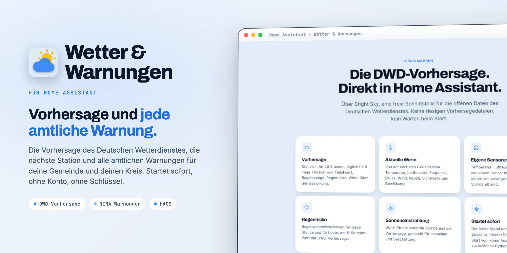

Wetter für Deutschland in Home Assistant
Wetter & Warnungen holt die Vorhersage des Deutschen Wetterdienstes, die nächste Station und alle amtlichen Warnungen nach Home Assistant: DWD für deine Gemeinde, MoWaS, KATWARN, BIWAPP, Hochwasser und Polizei für deinen Kreis. Startet sofort, ohne Konto, ohne Schlüssel.

Was sie kann
Über Bright Sky, eine freie Schnittstelle für die offenen Daten des Deutschen Wetterdienstes. Keine riesigen Vorhersagedateien, kein Warten beim Start.
Stündlich für 48 Stunden, täglich für 8 Tage: Höchst- und Tiefstwert, Regenmenge, Regenrisiko, Wind, Böen und Bewölkung.
Von der nächsten DWD-Station: Temperatur, Luftfeuchte, Taupunkt, Druck, Wind, Regen, Sichtweite und Bewölkung.
Temperatur, Luftfeuchte und Regen von einem Sensor in deiner Nähe gehen vor, solange sie höchstens eine Stunde alt sind.
Regenwahrscheinlichkeit für diese Stunde und für heute, der 6-Stunden-Wert der DWD-Vorhersage.
W/m² für die laufende Stunde aus der Vorhersage, gemacht für Jalousien und Beschattung.
Der letzte Stand kommt aus dem Speicher, frische Daten erst nach dem Start von Home Assistant. Keine zusätzlichen Python-Pakete.
Amtliche Warnungen
Alle 2 Minuten abgefragt. Ist eine Quelle nicht erreichbar, bleiben ihre letzten Warnungen stehen; abgelaufene verschwinden trotzdem pünktlich.
Sturm, Gewitter, Starkregen, Schnee, Glätte, Frost und Hitze, genau für deine Gemeinde.
DWD · Bright Sky
MoWaS, KATWARN und BIWAPP: Brände, Gefahrstoffe, Trinkwasser, Stromausfälle und mehr, für deinen Kreis.
warnung.bund.de · NINA
Hochwasserwarnungen der Länder (LHP) und Polizeimeldungen, für deinen Kreis.
warnung.bund.de · NINA
Ein Sensor Warnungen listet alle, die schlimmste zuerst. Warnung 1 bis 5 tragen dieselben Attribute wie die NINA-Integration, vorhandene Karten und Automationen laufen weiter.
Nachbarschaft
Die DWD-Station kann weit weg sein. Wähle in den Optionen Sensoren in deiner Nähe, sie gehen vor, solange sie frisch sind.
| Wert | Aus der Nachbarschaft |
|---|---|
| Temperatur, Luftfeuchte | Jeder Sensor: eigene Wetterstation (Ecowitt, Davis, Shelly, Netatmo-Außenmodul, …), ein Außenthermometer oder ein Netatmo-Wetterbereich |
| Niederschlag | Regen der letzten Stunde; Regen vor Ort korrigiert auch das Wettersymbol |
| Druck, Wind | Möglich, aber nur mit Druck auf Meereshöhe und frei stehendem Windmesser |
| Netatmo-Wetterbereich | Wird beim Einrichten automatisch vorgeschlagen. Ein Radius-Regler legt den Bereich als Quadrat um dein Zuhause neu an und schreibt ihn in die Netatmo-Optionen |
Installation
Als benutzerdefiniertes Repository.
https://github.com/SH1FT-W/wetter-warnungenNachbarschaftssensoren stellst du danach über Konfigurieren ein.
Kein Cloud-Konto, kein Schlüssel, kein YAML.
Beim Einrichten fragt die Integration einmal bei Bright Sky nach, ob es für den Ort Daten gibt.
Lade das neueste Release herunter, kopiere den Ordner custom_components/wetter nach /config/custom_components/, starte Home Assistant neu und füge die Integration hinzu.
Gut zu wissen
Nein. Vorhersage, Stationen und Warnungen kommen vom Deutschen Wetterdienst und dem Warnsystem des Bundes.
Dafür ist sie gebaut: Vorhersage, Stationswerte und alle Warnungen in einer Integration. Die Warnplätze tragen dieselben Attribute wie die NINA-Integration.
Sie gilt für den nächsten DWD-Vorhersagepunkt, meist wenige Kilometer entfernt. Kreis-Meldungen gelten für den ganzen Kreis, DWD-Warnungen für deine Gemeinde.
Nein. Nutze sie für Automationen und Dashboards; für deine Sicherheit bleiben die offiziellen Warnwege (NINA-App, Radio, Sirenen).
Ein GitHub-Issue mit der Diagnose öffnen. Koordinaten und Warngebiet sind darin geschwärzt.
Wetter & Warnungen
Die DWD-Vorhersage und alle amtlichen Warnungen, eine Integration, ohne Konto.